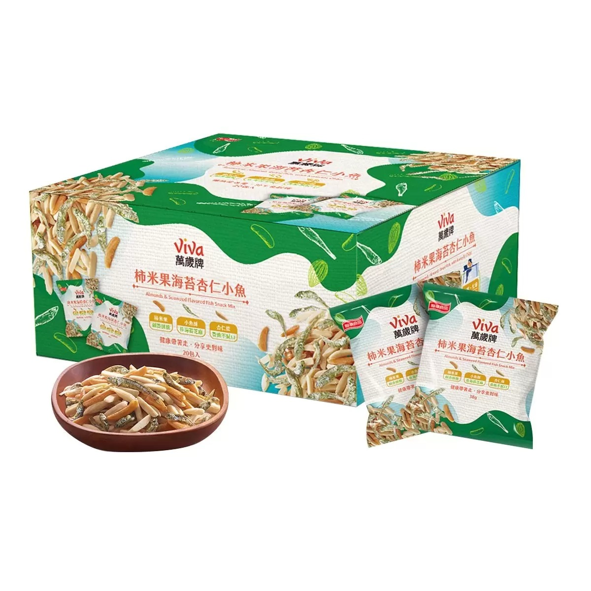

商品


萬歲牌 柿米果海苔杏仁小魚 38公克 X 20入
商品編號:#132365
$549商品詳情
- 內含柿米果、小魚酥佐海苔芝麻、杏仁條，鹹甜酥脆，層次口感香脆不膩口
- 下午茶、野餐點心、郊遊旅行的最佳分享包
- 獨立小包裝，方便攜帶

商品規格
| 品名 | Kirkland Signature 萬歲牌 柿米果海苔杏仁小魚 38公克 X 20包 |
|---|---|
| 內容量/入數 | 38公克 X 20入 |
| 商品重量 | 760公克 |
| 成分 | 杏仁條、柿米果[玉米澱粉、米粉、氧化澱粉、醬油、糖、糊精、鹽、味精 、水解大豆蛋白(水解大豆蛋白、酵母抽出物、鹽、糊精、味精、5’-次 黃嘌呤核苷磷酸二鈉、反丁烯二酸一鈉、琥珀酸二鈉)、焦糖色素、辣 椒、鰹魚抽出物、調味劑(5'-次黃嘌呤核苷磷酸二鈉、5'-鳥嘌呤核 苷磷酸二鈉)、紅椒色素、棕櫚油、紅麴色素、反丁烯二酸一鈉、琥珀 酸二鈉、辣椒抽出物]、小魚干、糖、麥芽直鏈寡糖、芝麻、海苔、葵花 油。 |
| 保存方式 | 未開封時請存放於陰涼乾燥處，開封後請冷藏並盡速食用完畢。 |
| 保存期限 | 以消費者收受日起算，至少距有效日期前30日以上 |
| 產地 | 台灣 |
| 過敏原資訊 | 主過敏原：本產品含有堅果類、芝麻、含麩質之穀物、大豆及魚類製 品。交叉過敏原：本產品與其他含有甲殼類、芒果、花生、牛奶、頭足 類、螺貝類、種子類、蕎麥、芹菜、芥末及軟體動物的產品於同一工廠 生產，食物過敏者請留意 |
購買須知
...